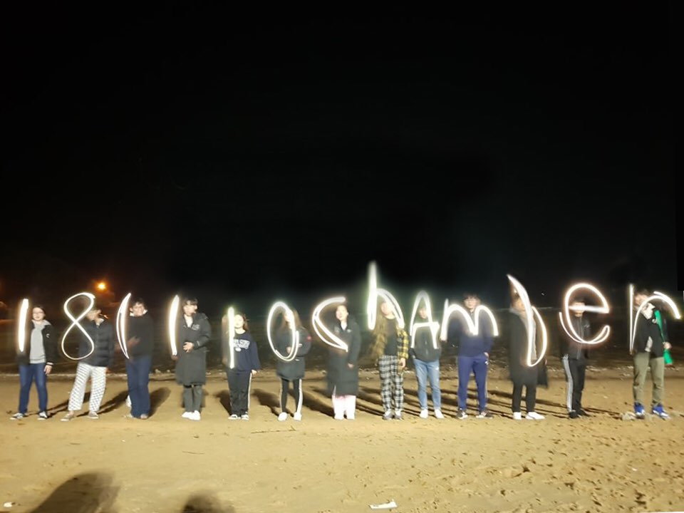
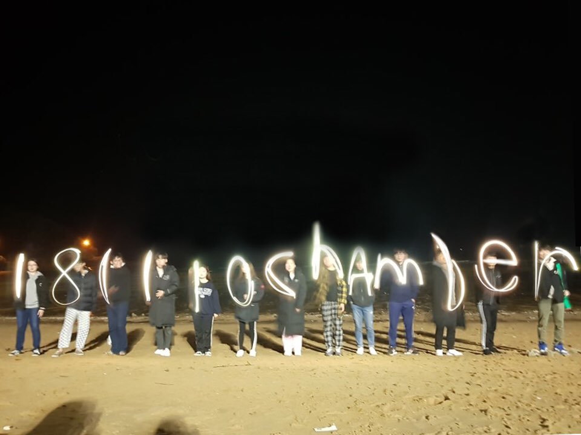

마지나
"마음과 지혜를 나누자"의 줄임말로 주로 토익과 오픽을 공부하는 영어스터디 활동을 한다.
현재 11기로 활동중이며 다수의 선후배들과 교류할 수 있는 기회가 많다(코로나만 아니었으면).
씨부엉
4기부터 활동중이고 IT 및 코딩 스터디로 java와 html+css를 공부하고 있다.
챔버 오케스트라
오케스트라 동아리로 매 학기마다 정기 연주회를 진행한다. 바이올린을 연주하고 있다.
"마음과 지혜를 나누자"의 줄임말로 주로 토익과 오픽을 공부하는 영어스터디 활동을 한다.
현재 11기로 활동중이며 다수의 선후배들과 교류할 수 있는 기회가 많다(코로나만 아니었으면).
4기부터 활동중이고 IT 및 코딩 스터디로 java와 html+css를 공부하고 있다.
오케스트라 동아리로 매 학기마다 정기 연주회를 진행한다. 바이올린을 연주하고 있다.